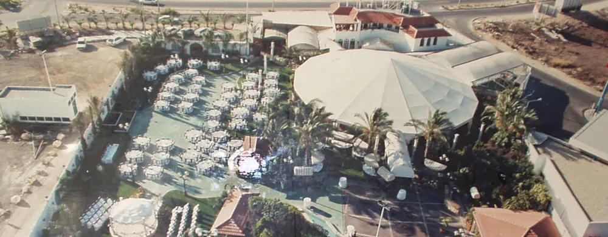
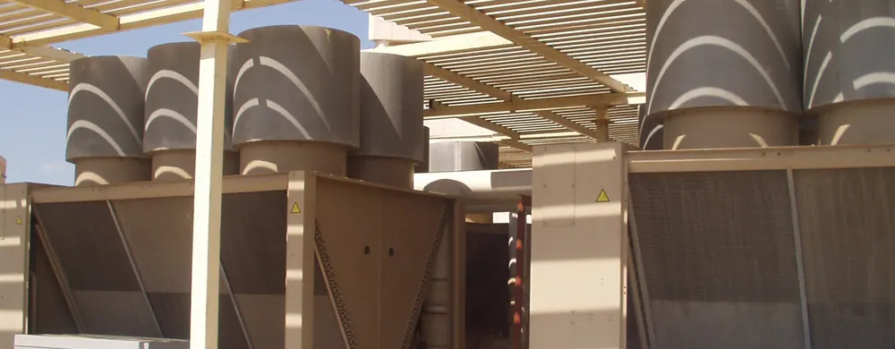
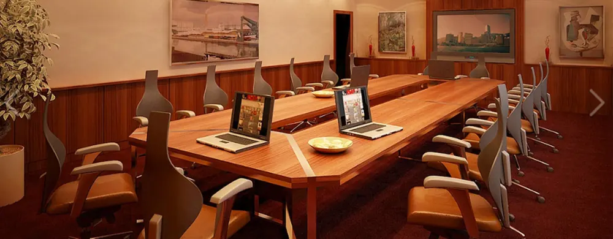
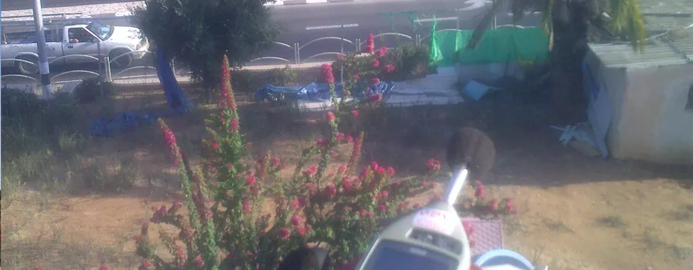

שקט. מדויק. מקצועי.
ייעוץ אקוסטי שאפשר לסמוך עליו.
חברת שקט מספקת ייעוץ אקוסטי, מדידות רעש ופתרונות בידוד לפרטיים, מוסדות וחברות בכל הארץ – בניהולו של עמוס יפה, מהנדס אקוסטיקה מוסמך, פעיל מאז 1980.
פתרון אקוסטי לכל מבנה ולכל רעש
מדירות מגורים ועד מתקני צה״ל – שקט מספקת מענה מקצועי ומדויק לכל סוגי המטרדים האקוסטיים.
מדידת והפחתת רעש
מדידות מומחה לכל סוג רעש – לפרטיים, מוסדות ובתי משפט, כולל ניטור ממושך לרעשים פתאומיים.
לפרטים ←ייעוץ אקוסטי לדירות ובתים
פתרונות לרעשי שכנים, צעדים, מוסיקה ודיבור – איתור מקור הרעש והמלצות מעשיות.
לפרטים ←אולמות, בתי כנסת ואולפנים
תכנון אקוסטי להבנת דיבור טובה, הגברה נכונה והפחתת הדהוד באולמות ובתי תפילה.
לפרטים ←עבודות שדיברו בשקט
מתוך אלפי פרויקטים שליווינו לאורך השנים – בתי כנסת, בתי חולים, גני אירועים ועוד.




ניסיון של למעלה מ-40 שנה בשירות השקט שלכם
חברת שקט נוסדה ב-1980 על ידי עמוס יפה, מהנדס אקוסטיקה מוסמך. החברה מאושרת ע״י המשרד להגנת הסביבה, ומשמשת כמומחה מוסמך וממונה מטעם בתי משפט ברחבי הארץ בשאלות של מטרדי רעש.
יש לכם רעש שמפריע?
דברו איתנו עוד היום לייעוץ ראשוני. אנחנו כאן כדי להחזיר את השקט.